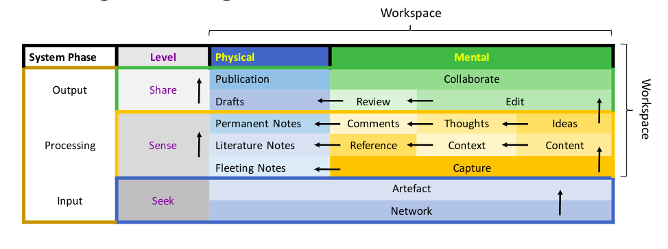

Explaining the Workspace Theory for Knowledge Management
This document outlines the explanation for the presentation titled “Workspace Theory for Knowledge Management”.
What is a Workspace?
What is a Workspace really?
When we think of a workspace, we usually think of an office space, or a study space, a study table or a workbench. I think, for knowledge workers, workspace has a distinct meaning. It is the place where we process information that we work with, through distilling data, and refining insights, dismantling arguments, and examining the reasoning behind them.
Categories of Workspace
From the definition of workspace that I gave above, we get a hint that there are two facets of the same idea of a workspace. In other words, a workspace has a physical and a mental aspect.
Categorically, then, we can think of workspace in two aspects -
- Mental Workspace
- Physical Workspace
However, we might benefit from seeing these two facets of workspace from an embedded perspective, rather than distinct categorical perspectives.
For example, At my Day-Job, I work at my designated workstation (P1), and then work more in my Desktop (P2). Coming back home, I can choose to work in my Personal Desktop (P3), or if I feel lazy enough, I work in my Laptop (P4). If I’m in mood for reading I switch to iPad (P5), and finally if I’m too tired, I may rather opt for my Cell Phone (P6).
Flow and Integration of Workspace Categories
Note that, with different physical workspace, my purpose, context, environment and everything related- shifts. This can be challenge when I am trying to work on a particular idea or project.
My mind, at my Day Job, or at home, or even when I’m on my laptop or iPad, is not the same. There are thoughts going in and out; I could get distracted by the thoughts that are irrelevant, or I could be brimming with inspiration or ideas at different moments.
Mental workspace is in the same location (on the top of our shoulders), but it is dynamically different at different instances of time. In simple words, our mind continuously thinks about different things.
The key to achieve productive thinking, I believe, is integrating the workspaces, or at least aligning them, in a way that we achieve flow. When we are in Flow state we are more creative, we enjoy what we do, and we do it with great attention. This is when we are most productive. 1
To easily achieve the flow state, Ahrens (2017), have suggested that having a good structure can help us find and track our thoughts without burdening our cognition. To avoid Cognitive Overload by system maintenance, and for keeping room for thought-content, we might benefit from designing a system for ourselves that works for us.
The brain has a property called Neuroplasticity, and because of it, we adapt to our own mental perspectives and ideas of systems. With a little effort to get out of our comfort zone, we can design systems that are better for our knowledge productivity.
System (Simplified)
But what is a system? In simple words, a system is something that takes input, processes it as throughput, and feeds the processed throughput as output. Think of all the things that produce stuff. Vending machines, printers; even buttons. You give them something, a coin, an instruction or even a push; The machine processes it for you and as a result you get something as an output - A chocolate bar, a printout or light getting turned on.
It is easier to think of Knowledge Management as an input-output system, but it gets complex when we get to the details.
If we consider knowledge works from a systems thinking perspective, input is taking in information, throughput is processing information and output is providing information. For a simple loop of conversation, this may sound simple, but it is far more complex when we are trying to compare, contrast, and argue for ideas that are insightful.
Knowledge Management Frameworks
Enter Knowledge Management Frameworks, a mechanism to create a mental system or habit for Knowledge Management. There are quite some influential Knowledge Management Frameworks out there that focuses on different aspects of knowledge management. Here we discuss two of them- the “Seek>Sense>Share” by Harold Jarche, and “Zettelkasten” by Dr. Niklas Luhmann.
“Seek, Sense, Share” by Harold Jarche
If I can put it correctly, the idea behind “Seek, Sense, Share”, conceived by Harold Jarche, is that we are increasingly becoming interconnected individuals. Simply bookish knowledge is not enough. There are other sources of knowledge, and some are more credible and some more compact and relevant. 2
To start off, we have to look for a network of people who cultivate knowledge relevant to our work and passion. In this way, when we interact or follow them, we can get a curated feed of Knowledge.
Once we collect knowledge artefacts from them, we can either study it, or we can also learn by doing it, practicing it, molding it to our own situation. And by doing it, we effectively use the knowledge that we acquire.
When our purpose is accomplished, we can do more for others, by giving back. We can write down our insights and experiences, and share them with our networks. That way we build trust and credibility, and make our own place in the knowledge network.
I feel like Jarche puts emphasis on Social Learning, which is what most of us are doing nowadays. It’s a good way of getting curated artefacts of knowledge, and gives us a boost in pursuit of our projects.
“Zettelkasten” by Dr. Niklas Luhmann
The “Zettelkasten”, which is the German for Slip-Box, is a method developed by German Sociologist Dr. Niklas Luhmann. I borrow the interpretation of Zettelkasten from the work by Sönke Ahrens (2017).
The idea is to write alongside reading and thinking. When reading, our thoughts are temporary, therefore we benefit by writing them down, recording the snapshot of our mental workspace in notes. Not only should we write down our thoughts, we are better off, if we record the context and reference of how we came across the thought, what conjured it. Therefore, when taking temporary or literature notes from books or articles, we are better off by recording the source.
Now that we have temporary notes full of fleeting thoughts, and literature notes, a translation of other people’s thoughts in our own understanding, we can remix them, by reviewing them contextually, and linking them to one another, building relationships, comparing, contrasting and thereby producing new thoughts, comments and ideas. Again we would be benefited if we record these new thoughts.
But this could get complicated easily. Luhmann’s secret was to create a simple system, easy to remember, and yet powerful enough to maintain a huge note-base. His philosophy was to-
- have one thought, idea, comment per note
- have a unique code for each of these notes
- use these unique codes to refer one note to another
- keep an index of contexts using unique code groups
- review the unique code groups when writing new notes
Luhmann’s system is not a fad. It’s insight is essential for how we work these days, especially for academics. Nevertheless, I feel this framework puts more emphasis on processing knowledge internally. For anyone who is getting started, Ahrens’ book is a great resource.3
Putting it all Together
I have tried to amalgamate the two frameworks along with systems and workspace theory to show that it all goes hand in hand.
Below is a visualization of what I have come up with.

At the bottom-left most corner, we have input, Jarche might associate this with his seeking level where we look for filtering networks of people, and find artefacts that are worth going through.
The processing is the most important bit, Jarche might say the best way to utilize this is to sensemake what we are learning by doing it. For academics, students, researchers, this is capturing thoughts in fleeting notes, recording contents along with context, reference in literature notes, and finally remixing these with ideas, thoughts, comments in permanent notes.
Notice the arrows indicate idea flow of information processing. Physical and Mental Workspaces are also marked in blue and Green-Yellow Tones.
Now that we have a solid(!) idea of what we want to know, it’s time to share it with the world, or at least our network. So we work on drafting our material, editing it, reviewing it, and finally collaborating when feedback on our published knowledge materials.
Outlook
What does this hold for Knowledge Workers?
For one, each different mental workspace may need different tooling. Mind Mapping is great for idea generation, but writing is best for describing thoughts. Bibliography software is better for capturing reference while writing content is best suited in a notepad, digital or analog. Seeking is usually best done in social media, while artefact is best read in different devices.
We might need to sort out how our mental and physical workspaces interact with one another at different times. With compliments from the frameworks discussed, it seems the more integrated the workspaces are, the better flow might be achieved for knowledge work.
Reference
Written by Muhammad Mustafa Monowar
Photo by Qijin Xu on Unsplash
Subscribe to PhinixBlogs
Get the latest posts delivered right to your inbox